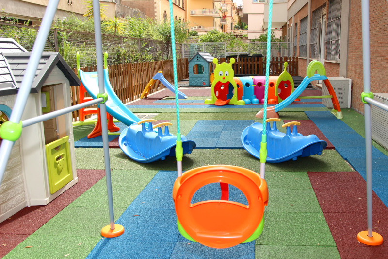

<section class="whiteSection afterWhiteSection full-width clearfix">
    <div class="container">
        <div class="row">
            <div class="col-sm-6 col-xs-12">
                <div class="schoolInfo">
                    <h2>{{ page.title }}</h2>
                    <p align="justify">L'Asilo Nido "I Bambini del Circo Massimo" è distribuito su un unico livello di circa 220 mq interni e circa 150 mq esterni. Lo spazio interno è costituito
                        dall'Accoglienza, da un salone polivalente dedicato ai pasti ed alle attività espressive quotidiane. </p>
                    <p align="justify">Lo spazio dedicato ai lattanti è suddiviso in un'area gioco e in un'area dedicata al sonno. Sono presenti tre ampie stanze polivalenti per attività espressive,
                        gioco simbolico e psicomotricità.</p>
                    <p align="justify">La struttura del nido permette di suddividere i bimbi in base alle diverse fasce di età ed in ogni stanza è annesso un angolo cambio. Ogni ambiente è predisposto
                        e studiato per promuovere la socializzazione e l'autonomia dei bambini, ogni ambiente è a misura di bambino e adatto alla sua età.</p>
                    <p align="justify">L'asilo dispone di un giardino esterno attrezzato di diversi giochi di 150 mq circa. Nel'asilo nido è presente la cucina interna.</p>

                </div>
            </div>
            <div class="col-sm-6 col-xs-12">
                
            </div>
        </div>
        <div class="row">
            <div class="row isotopeContainer">

                {% for image in site.static_files %}
                {% if image.path contains 'assets/home_gallery/aule' %}
                <div class="col-md-3 col-sm-6 col-xs-12 isotopeSelector {{ class }}">
                    <article class="">
                        <figure>
                            
                            <div class="overlay-background">
                                <div class="inner"></div>
                            </div>
                            <div class="overlay">
                                <a class="fancybox-pop" rel="portfolio-1" href="{{ site.baseurl }}{{ image.path }}">
                                    <i class="fa fa-search-plus" aria-hidden="true"></i>
                                </a>
                            </div>
                        </figure>
                    </article>
                </div>
                {% endif %}
                {% endfor %}
            </div>
        </div>
        <div class="row">
            <div class="btnArea">
                <a href="galleria.html" class="btn btn-primary"><i class="fa fa-image"></i> Guarda Tutte le Foto</a>
            </div>
        </div>
    </div>
</section>